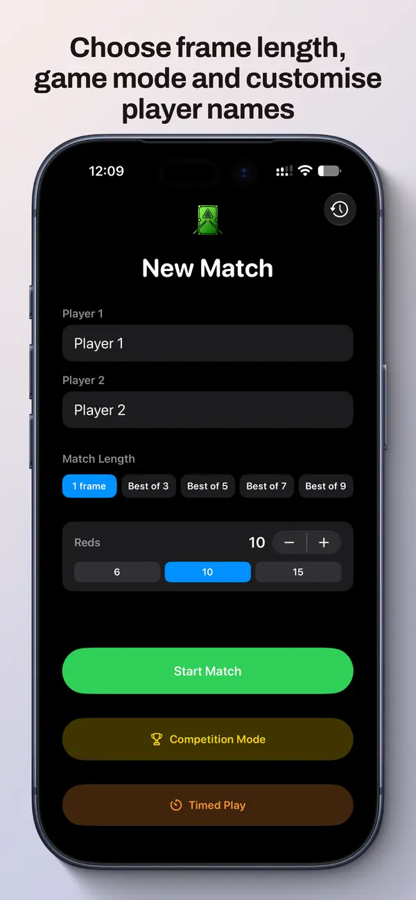
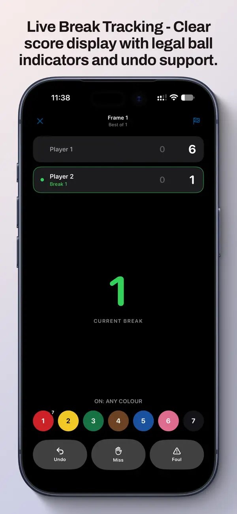
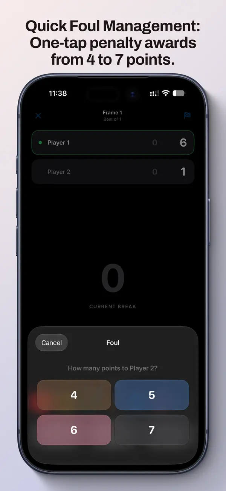
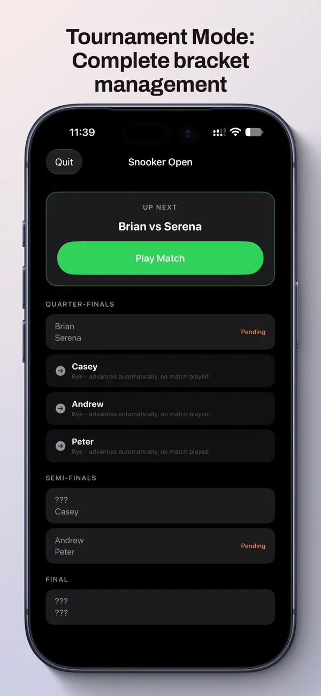

Live match tracking
Record every shot as it happens. Track frame scores, breaks, and individual shot results with an intuitive, tap-based interface that keeps up with the pace of play.
Snooker Scoring is a match tracking app for iPhone - record your shots, track tournament play, generate detailed reports and statistics, and keep a complete history of every frame you've played.

Snooker Scoring helps you record matches, analyze your play, and build a complete history of your snooker journey.
Record every shot as it happens. Track frame scores, breaks, and individual shot results with an intuitive, tap-based interface that keeps up with the pace of play.
Manage multi-match tournaments with automatic scoring, player progression tracking, and final standings - perfect for league play and organized events.
Break down your performance by match, frame and opponent. See win rates, average breaks, consistency trends and more to understand your game.
Generate shareable scorecards and tournament reports in PDF format - perfect for printing, sharing with opponents, or keeping records in your archive.
Every match you play is saved automatically. Search and filter your history by date, opponent, or result - build your snooker resume over time.



Play your first match free. Unlock full access with a one-time purchase - no subscription, no ongoing fees.
Download the app and track one basic match completely free - no credit card required.
Unlock unlimited match tracking, tournaments, statistics, and all features.
The free trial gives you a taste of how scoring works. Unlock the full app to access tournaments, statistics, history and all features.